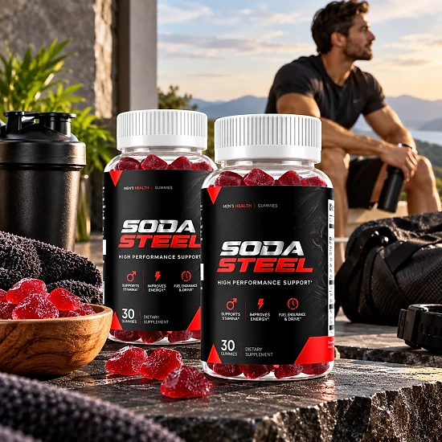
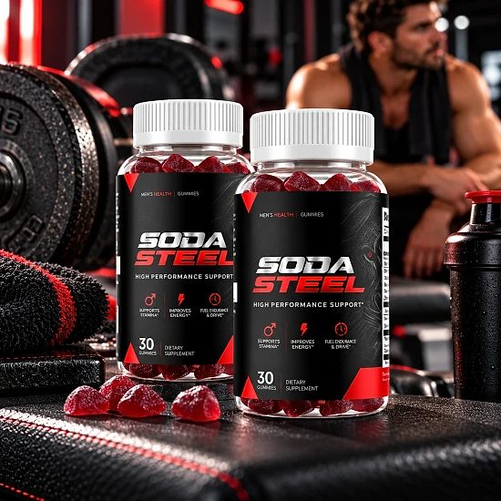
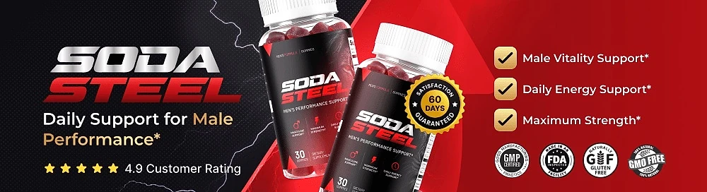

What Is Soda Steel And How Does It Work?
Soda Steel is a dietary supplement in gummy form, labeled "Men's Health Gummies" and "High Performance Support", that is designed to support daily energy, masculine vitality, and overall performance. According to the official website, it was made for men who want to stay active and energized without adding a complicated routine to their day.
The formula combines vitamins, a mineral, amino acids, and botanical extracts in a single chewable gummy. The official FAQ lists Vitamin B3, Vitamin B6, Zinc, L-Carnitine, L-Citrulline, and Grape Seed Extract, along with a proprietary blend that features Panax Ginseng, Maca Root, and Rhodiola extracts.
How does it work? The official website explains that Soda Steel is designed to work with the body's natural rhythm instead of forcing a quick fix. Rather than leaning on stimulants that spike energy and then crash, the brand describes a steady daily formula built on nutrients and botanicals that were selected for their traditional role in energy metabolism, physical performance, and male vitality.
B-vitamins and Zinc contribute to normal energy-yielding metabolism, while L-Citrulline and Grape Seed Extract are commonly included in formulas that focus on healthy circulation. Ginseng, Maca, and Rhodiola have a long history of traditional use for stamina, focus, and resilience to everyday stress.
Soda Steel is not presented as an instant solution. The official FAQ says some men notice a difference in energy within the first few weeks, while the fullest results come with continued use over 60 to 90 days. Individual results may vary.
According to the official website, Soda Steel is manufactured in an FDA-registered facility in the United States and distributed from Aurora, Colorado. Each bottle contains 30 gummies, a 30-day supply at one gummy a day.
Soda Steel is a dietary supplement. It is not intended to diagnose, treat, cure, or prevent any disease, and it does not replace medical advice or any treatment prescribed by a doctor.
Soda Steel Ingredients
The official website names the ingredients in each Soda Steel gummy. These are the main components:
L-Citrulline: an amino acid commonly included in performance-focused formulas, which may help support healthy circulation and normal physical performance.
Panax Ginseng Extract: a well-known botanical traditionally used for energy, stamina, and overall vitality.
Maca Root Extract: a root traditionally associated with male wellness and vitality.
Rhodiola Rosea Extract: an adaptogenic herb that may support stamina, mental focus, and resilience to everyday stress.
Grape Seed Extract: a source of antioxidants that may support healthy circulation and cardiovascular function.
The formula also includes Vitamin B3, Vitamin B6, Zinc, and L-Carnitine, which support normal energy metabolism. L-Carnitine is an amino acid derivative involved in how the body turns fat into energy, and Zinc is a mineral that plays a part in normal testosterone levels and immune function.
Ginseng, Maca, and Rhodiola are part of a proprietary blend, and the website does not publish the full Supplement Facts panel with every amount, so check the label on the bottle for doses and other ingredients.
Soda Steel Side Effects
According to the official website, Soda Steel is made with ingredients commonly found in daily dietary supplements and is generally well tolerated. The brand also says the formula does not rely on the kind of stimulants that spike energy and then let you crash, which may make it easier to fit into a daily routine.
The official FAQ includes a clear caution: if you have a medical condition or take prescription medication, check with your healthcare provider before starting. The same advice applies if you already take a supplement for a specific health condition. The website is intended for adults aged 18 and over.
This advice matters for this kind of formula. Ingredients such as L-Citrulline, Ginseng, and Grape Seed Extract are traditionally linked to circulation and energy, so men who take medication for blood pressure, the heart, blood thinning, or blood sugar should talk to a doctor first. Niacin (Vitamin B3) can cause a temporary warm, flushing sensation in some people.
Keep the bottle out of reach of children, and do not take more than the recommended amount, especially because gummies can be easy to over-consume. If you notice any discomfort or unusual reaction, stop taking it and speak with a healthcare professional. Individual tolerance varies.
Soda Steel Dosage
The official FAQ gives the suggested use: take one (1) gummy daily. There is no measuring, no splitting doses, and no handful of capsules to remember during the day. Each bottle holds 30 gummies, so one bottle lasts about a month.
The brand suggests building the gummy into a routine you already have, such as right after breakfast. Taking it at about the same time each day makes it easier to stay consistent, and consistency matters more than timing.
Do not take more than one gummy a day unless a healthcare professional tells you otherwise. Because the product tastes like a treat, store it where children cannot reach it.
According to the official FAQ, some men notice a difference in energy and daily performance within the first few weeks, while most see the fullest results after 60 to 90 days of regular use. Results vary from person to person.
Soda Steel works best as part of a healthy lifestyle that includes balanced meals, regular physical activity, good sleep, and enough water. It is a supplement, not a substitute for healthy habits or medical care. Store the bottle in a cool, dry place with the lid closed.
Soda Steel – Refund Policy
Soda Steel is covered by a 60-Day Satisfaction Promise, counted from the original purchase date, according to the official website. If you are not fully satisfied, you can contact the support team to request a refund under the brand's published terms.
Step 1 – Contact support: email support@sodasteel.com with the subject line "Refund Request – Order #" followed by your order number. The support team reviews the request and sends return instructions. The support phone number listed on the website is 833-762-2450.
Step 2 – Ship the return: use a trackable shipping method and email the tracking number to support. The return address listed on the official website is Soda Steel (C/O Fulfillment), 19655 E 35th Drive, Suite 100, Aurora, CO 80011, USA. The cost of sending the return is the customer's responsibility, unless an incorrect or damaged item was shipped, in which case the brand provides a prepaid label.
Step 3 – Inspection and refund: approval usually takes 3 to 5 business days after the package arrives. The refund goes to the original payment method, and banks typically need 5 to 7 business days for credit cards or 5 to 10 for debit cards.
Partial refund option: the policy also describes an optional partial refund with no return required, offered at the brand's discretion. Bulk or reseller orders are not eligible.
Read the full policy on the official website before ordering so you know every condition.
Soda Steel Customer Reviews
-
David, 54Verified Purchase – 6 Bottles
“I wanted something simple to add to my routine, and SODA STEEL has been really easy to stick with. I like the gummy format, and I feel like it fits well with the active lifestyle I’m trying to maintain.”
-
Michael, 52Verified Purchase – 6 Bottles
“At my age, staying consistent with my energy and daily routine matters a lot. SODA STEEL gives me an easy way to support that without adding anything complicated to my day.”
-
James, 47Verified Purchase – 6 Bottles
“My main goal was to support my energy and overall performance as part of a healthier routine. SODA STEEL has been easy to incorporate, and I like having a formula made specifically for men.”
Soda Steel – Where To Buy
Soda Steel is sold through its official website, and orders are processed by BuyGoods, the retailer named on the checkout. The official website does not point buyers to Amazon, eBay, Walmart, or other marketplaces.
Bottles sold by unknown third parties may look the same, but there is no way to confirm their origin or how they were stored, which raises real concerns about quality and safety. Purchases made outside the official source may not be covered by the 60-Day Satisfaction Promise.
That is why most buyers prefer to order Soda Steel directly from the official website. Going to the source means getting the authentic original product, made in an FDA-registered facility in the USA, with access to the support team and the full satisfaction promise.
Before completing your order, make sure you are on the official Soda Steel website to avoid counterfeit products. Checking the address before you pay takes only a moment and helps protect your order.
To ensure you’re getting the authentic product, most users choose to visit the official website.
Is Soda Steel A Scam?
Based on the official website, Soda Steel does not appear to be a scam. It is a real dietary supplement, sold through BuyGoods, an established retailer, and designed to support daily energy, masculine vitality, and performance with regular use.
The website names the ingredients in each gummy, gives a distributor in Aurora, Colorado, a support email and phone number, and publishes a physical return address and a detailed refund process with processing times.
There are points to keep in mind. Three of the botanicals are part of a proprietary blend, and the website does not publish the complete Supplement Facts panel, so the exact amount of each ingredient is not shown there. Check the label on the bottle once you receive it.
The sales page also uses a countdown timer and "limited time" messages, and it shares rating figures without saying how they were measured. Treat those as marketing, and judge the product by its ingredients and policies.
Soda Steel comes with a 60-Day Satisfaction Promise, although the return shipping cost is usually the buyer's responsibility.
For adult men who want a simple daily gummy to support energy, stamina, and overall vitality, Soda Steel may be worth considering, ideally ordered from the official website and discussed with a doctor if you have a medical condition or take medication.
For those who want to verify product details or check current availability, the official Soda Steel website remains the safest option.

Check Availability On Official Website
